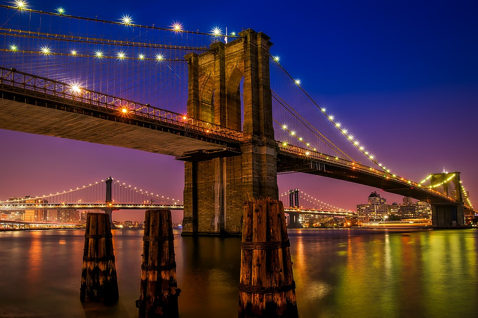

The Night The Bridges Stopped Working is a 2021 science fiction/mystery film. It stars Taika Waititi, Jessie Mei Li, and Tom Holland. The movie shows the aftermath of mysterious event which causes all the bridges in the world to disappear
The main storyline of the film follows father Sid Rialto as he tries to reunite with his pregnant wife Brooklyn, who was stranded on the other side of a bridge from him on the night when all the bridges in the world mysteriously disappeared. To solve the mystery and get reunited, he follows a series of clues that lead him to Conspiracy Theorist Cohen, who tells him that this is the first stage in an alien invasion.
Filming for the series took place primarily in the Central Otago region of New Zealand. Originally scheduled for filming in 2020, production was pushed back a year due to the Covid-19 pandemic.
In the opening scene of the film a Tesla car crashes into a river when a bridge disappears. A spokesperson from Telsa complained in the media that "This was unrealistic, and would not happen in real life".